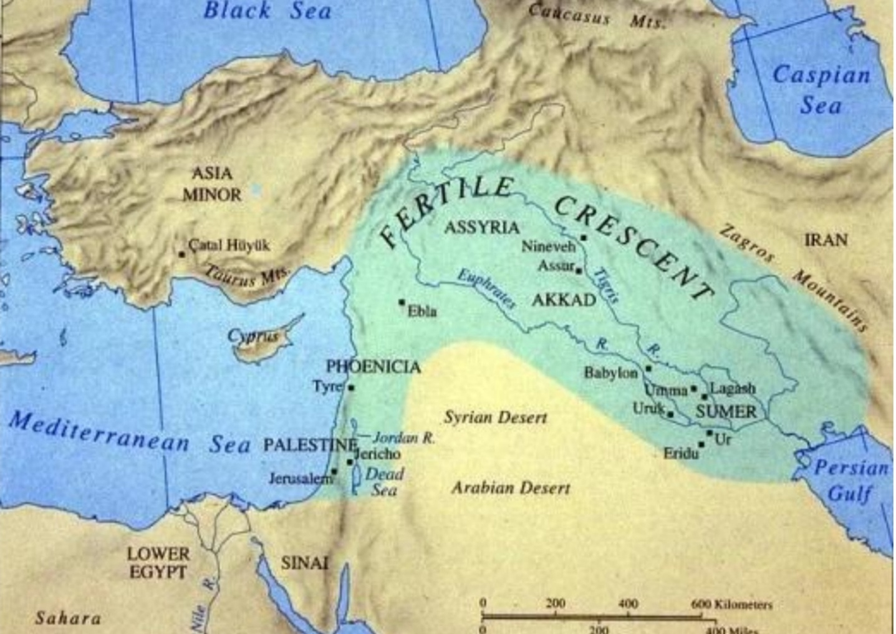
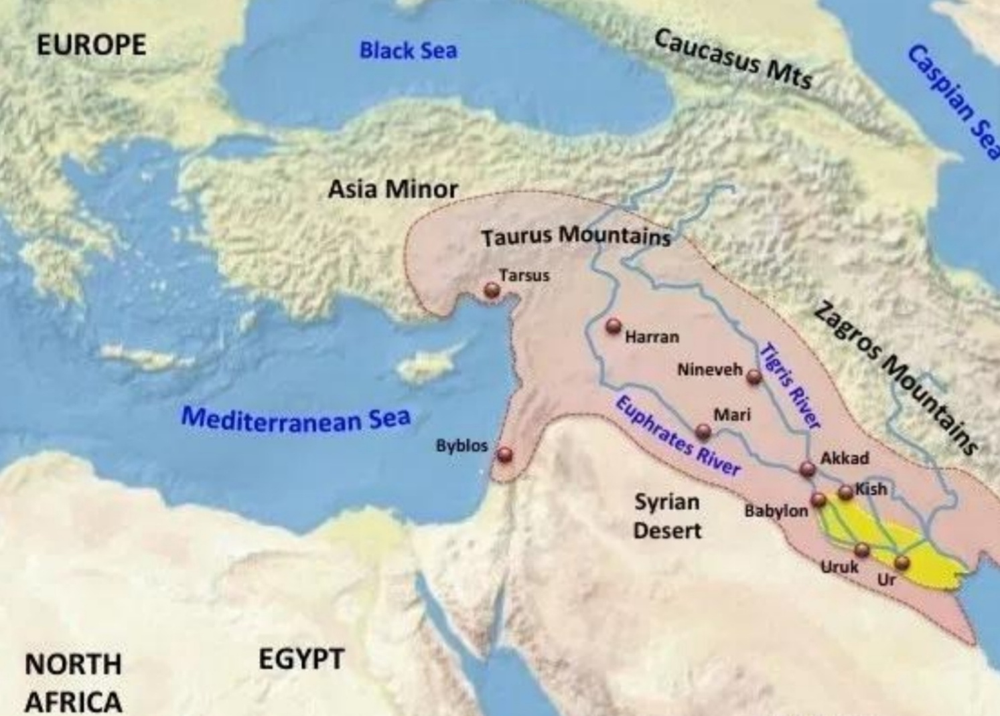
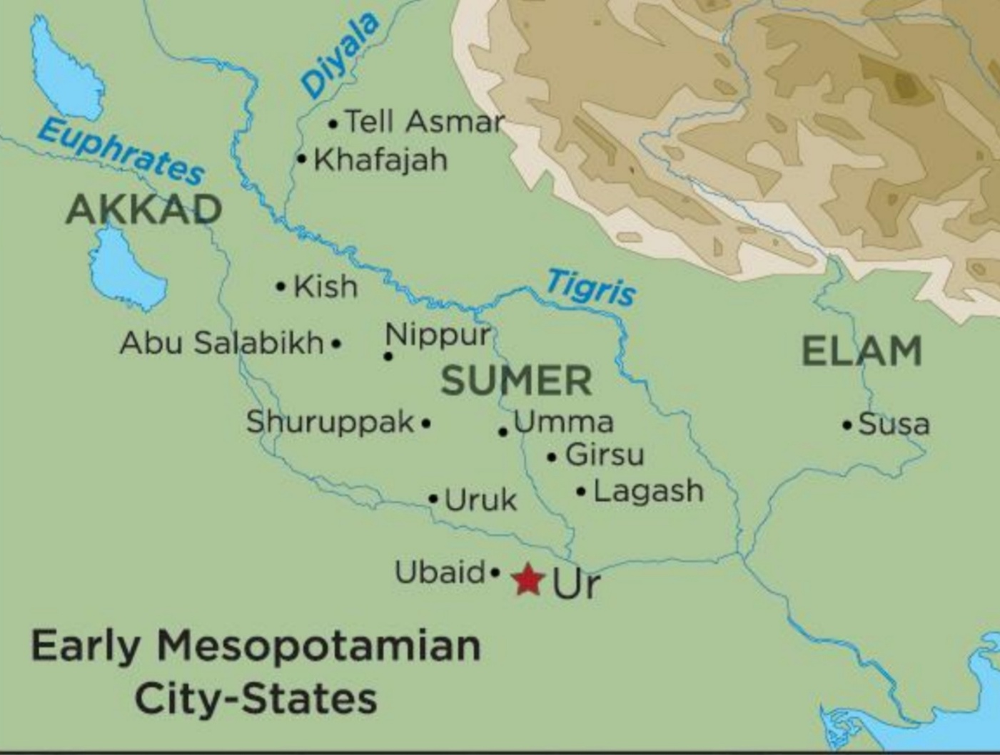

김산해 옮김 · 수메르어 · 악카드어 원전 통합본 기준
책에 지도가 없어 아쉬웠던 부분입니다. 북쪽 산지에서 페르시아만까지 이어지는 비옥한 초승달 지대, 그 남쪽 끝에 수메르 도시국가들이 모여 있습니다.



자료 제공: 신운화 회원 (23차 모임). 세 장을 겹쳐 보면 전체 → 초승달 → 도시국가 순으로 초점이 좁혀집니다. 에리두는 첫 번째 지도 남쪽 끝에서 확인할 수 있습니다.
메소포타미아 만신전의 뼈대입니다. 하늘신 안에서 시작해 실권자 엔릴, 인간 편에 서는 엔키로 갈라집니다.
신 이름을 누르면 그 신이 서사시 어디에 등장하는지 아래에 펼쳐집니다.
계보는 판본마다 다릅니다. 특히 이쉬타르는 안의 딸로 나오는 전승과 난나의 딸(우투의 쌍둥이 누이)로 나오는 전승이 함께 있습니다. 위 그림은 후자를 따랐습니다. 아루루는 닌후르쌍 · 마미 등 여러 이름으로 불리는 대모신으로, 계보상 안의 배우자 혹은 누이로도 나옵니다.
신과 인간의 경계에 걸친 혈통입니다. "3분의 2는 신, 3분의 1은 인간"이라는 그 유명한 비율이 여기서 나옵니다.
엔키두는 혈연이 아니라 입양으로 가족이 됩니다. 7장 「닌순의 기도」에서 닌순이 엔키두의 목에 부적을 걸어주며 아들로 받아들이죠. 태생이 다른 둘을 서사가 굳이 형제로 묶는 장치입니다.
여정의 단계별로 등장 인물을 묶었습니다. 각 카드의 태그는 김산해 판 기준 장 번호입니다.
샴하트
Shamhat
이쉬타르 신전의 여사제. 이레 동안 엔키두와 함께하며 그를 짐승에서 인간으로 건너오게 한다. 문명화의 통로.
3장 엔키두의 개화사냥꾼
초원의 사냥꾼
덫이 계속 망가지는 것을 보고 엔키두를 발견해 길가메쉬에게 알린다. 아버지의 조언에 따라 샴하트를 데려온다.
2~3장우루크의 원로들
장로회
삼목산 원정을 강하게 만류한다. 길가메쉬가 무시하는 첫 번째 목소리.
6장 훔바바 살해 음모닌순
Ninsun
어머니 여신. 태양신 샤마쉬에게 아들을 지켜달라 기도하고, 엔키두를 아들로 입양한다.
7장 닌순의 기도훔바바 · 후와와
Humbaba(악카드) / Huwawa(수메르)
삼목산의 수호자. 같은 존재의 두 언어 이름이다. 엔릴이 임명한 자여서 살해는 곧 신성모독. 목숨을 구걸하지만 엔키두가 죽이라 밀어붙인다.
9장 · 10장이쉬타르
Ishtar / Inanna
길가메쉬에게 청혼했다가 모욕적으로 거절당한다. 안에게 하늘의 황소를 청해 복수한다.
11장 이쉬타르의 청혼하늘의 황소
Gugalanna
이쉬타르가 내려보낸 재앙. 우루크에 가뭄과 죽음을 몰고 온다. 둘이 죽인 뒤 넓적다리를 여신에게 집어던진다.
12장아가
Agga
키쉬의 왕, 엔메바라게시의 아들. 우루크를 포위한다. 표준판에 없는 수메르 독립 설화에서 온 인물.
13장전갈 인간 부부
마슈 산의 문지기
해가 드나드는 쌍둥이 산의 문을 지킨다. 인간은 갈 수 없다고 막지만 길가메쉬는 밀고 통과한다.
17장씨두리
Siduri
세상 끝 바닷가 술집의 여주인. 서사시에서 가장 많이 인용되는 충고를 남긴다 — 배를 채우고, 옷을 빨고, 아이의 손을 잡으라.
18장 씨두리의 충고우르샤나비
Urshanabi
죽음의 물을 건너는 뱃사공. 길가메쉬가 그의 돌 인간들을 부숴버려 스스로 건널 수단을 없앤다. 마지막 장면에서 우루크로 함께 돌아온다.
19장우트나피쉬팀
Utnapishtim / 지우수드라 · 아트라하시스
홍수의 생존자. 신들에게 불멸을 받은 유일한 인간. 이레 동안 깨어 있으라는 시험을 내고, 길가메쉬는 곧바로 잠든다.
20~21장우트나피쉬팀의 아내
이름 없음
빈손으로 돌려보내지 말라고 남편을 설득한다. 불로초의 존재를 알려주는 계기.
22장뱀
—
길가메쉬가 목욕하는 사이 불로초를 물고 달아난다. 싸움조차 허락되지 않는 마지막 상대. 뱀이 허물을 벗는 이유의 기원담.
22장 왕의 귀환에레쉬키갈
Ereshkigal
저승의 여왕. 이쉬타르의 언니. 한번 들어온 자를 놓아주지 않는다.
16장아눈나키
Anunnaki
저승의 신들 · 심판관 무리. 아들 일곱을 남긴 자가 그 사이에 앉는다.
16장엔키두의 혼령
—
저승의 금기를 모두 어겨 붙잡힌다. 열린 구멍으로 바람처럼 올라와 죽은 자들의 처지를 낱낱이 전한다.
16장 저승 여행인물들이 어떻게 맞물려 결말로 굴러가는지, 인과만 뽑았습니다.
계보만으로는 보이지 않던 역할 분담이 여기서 드러납니다. 장 번호는 김산해 판 기준입니다.
1~5장 · 발단
| 장 | 신 | 하는 일 |
|---|---|---|
| 1 | 안 | 우루크는 안과 이쉬타르의 도시(에안나 신전). 폭정에 시달린 백성의 탄원이 안에게 올라간다 |
| 2 | 아루루 | 안의 명령으로 손을 씻고 진흙을 떼어 초원에 던져 엔키두를 빚는다 |
| 3 | 이쉬타르 | 직접 등장은 없으나 샴하트가 그녀의 신전 사제다 — 간접 개입 |
| 4 | 닌순 | 아들의 꿈을 해몽한다. 하늘에서 떨어진 별과 도끼가 곧 찾아올 벗이라고 |
6~10장 · 삼목산 원정
| 장 | 신 | 하는 일 |
|---|---|---|
| 6 | 엔릴 | 훔바바를 삼목산 수호자로 임명한 자로 언급된다. 살해가 곧 신성모독이 되는 근거 |
| 7 | 닌순 · 샤마쉬 | 닌순이 지붕에 올라 향을 피우고 샤마쉬에게 기도한다. 샤마쉬의 아내 아야에게 "남편을 일깨워달라" 청하는 대목이 여기. 이어 엔키두를 아들로 입양한다 |
| 8 | 샤마쉬 | 산행 중 길가메쉬가 밀가루를 뿌리고 청한 꿈을 계속 보내준다 |
| 9 | 샤마쉬 | 열세 바람을 보내 훔바바를 붙들어 움직이지 못하게 한다. 이 원정의 승리는 사실상 샤마쉬가 만든 것 |
| 10 | 엔릴 | 분노한다. 훔바바의 일곱 광휘를 거두어 강 · 사자 · 갈대 등 자연에 나눠준다 |
11~13장 · 신에 대한 도전
| 장 | 신 | 하는 일 |
|---|---|---|
| 11 | 이쉬타르 | 청혼했다가 거절당한다. 옛 연인 목록이 낭독된다 — 두무지, 얼룩날개새, 사자, 말, 목자, 그리고 아버지의 정원사 이슐라누 |
| 12 | 안 · 이쉬타르 | 이쉬타르가 아버지 안에게 하늘의 황소를 요구한다. 안이 거절하자 "저승의 문을 부수고 죽은 자를 올려보내겠다"고 협박해 관철한다 |
| 13 | 이난나 · 우투 | 수메르 설화라 이름이 수메르식이다. 길가메쉬는 이난나의 총애를 받는 왕으로 나온다 |
14~17장 · 판결과 죽음
| 장 | 신 | 하는 일 |
|---|---|---|
| 14 | 아누 · 엔릴 · 에아 · 샤마쉬 | 신들의 회의. 엔릴이 엔키두를 지목하고, 샤마쉬가 변호하다 면박당한다 |
| 14 | 에레쉬키갈 | 엔키두의 꿈에 저승이 펼쳐진다. 여왕 에레쉬키갈과 그 서기 벨레트-체리가 등장 |
| 14 | 샤마쉬 | 엔키두가 샴하트를 저주하자 꾸짖어 축복으로 돌리게 한다 |
| 16 | 엔릴 → 난나 → 에아 → 샤마쉬 | 엔키두를 돌려달라는 청을 엔릴이 거절하고 난나도 거절한다. 에아가 나서 샤마쉬에게 저승에 구멍을 열게 한다. 계보가 서사로 작동하는 가장 선명한 장면 |
| 17 | 샤마쉬 | 마슈 산은 해가 드나드는 문이다. 전갈 부부는 그 문의 수호자 |
18~23장 · 세상 끝과 귀환
| 장 | 신 | 하는 일 |
|---|---|---|
| 18 | 씨두리 | 인간이 아니라 술의 여신격 존재로 본다 |
| 21 | 거의 전원 | 엔릴이 홍수를 결정 → 에아가 갈대벽에 대고 우트나피쉬팀에게 귀띔 → 아다드의 폭풍, 네르갈이 기둥을 뽑고 니누르타가 둑을 무너뜨리고 아눈나키가 횃불을 들어올린다 → 이쉬타르가 산모처럼 통곡하고 벨레트-일리(아루루)가 후회한다 → 제물 냄새에 신들이 파리처럼 모여든다 → 에아가 엔릴을 설득해 우트나피쉬팀에게 불멸을 얻어준다 |
| 23 | 엔릴 · 엔키 · 에레쉬키갈 | 신들의 회의가 길가메쉬의 운명을 정한다. 그는 죽어 저승의 판관이 된다 |